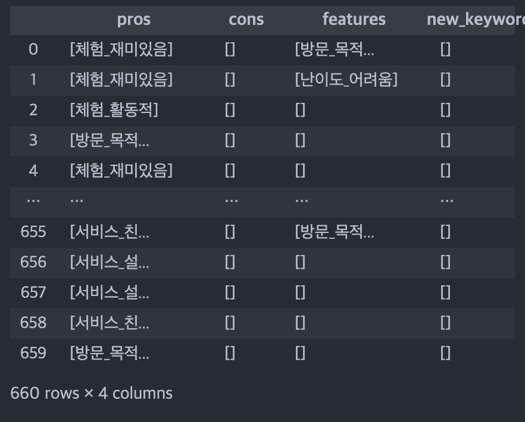
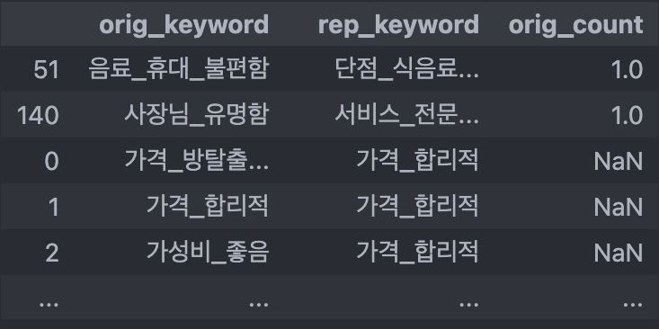
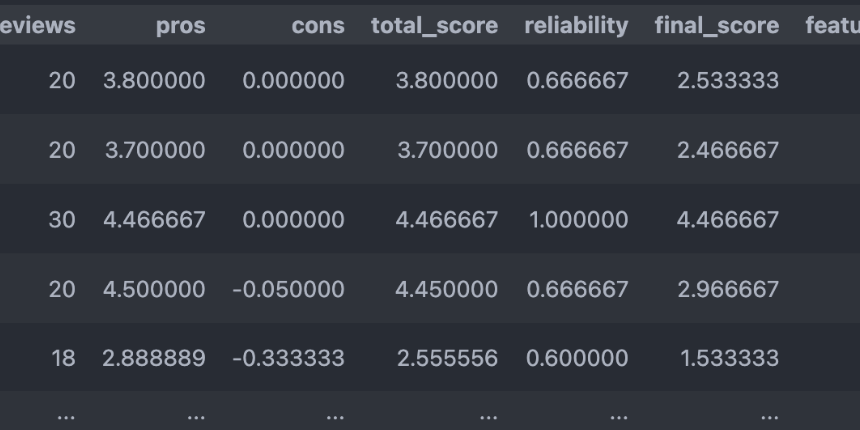
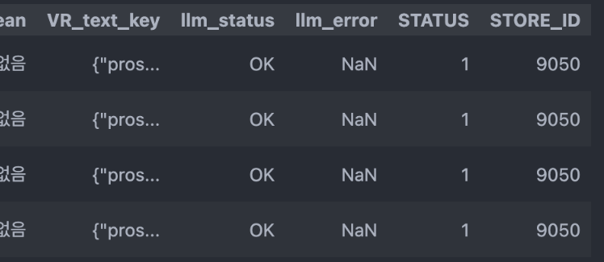
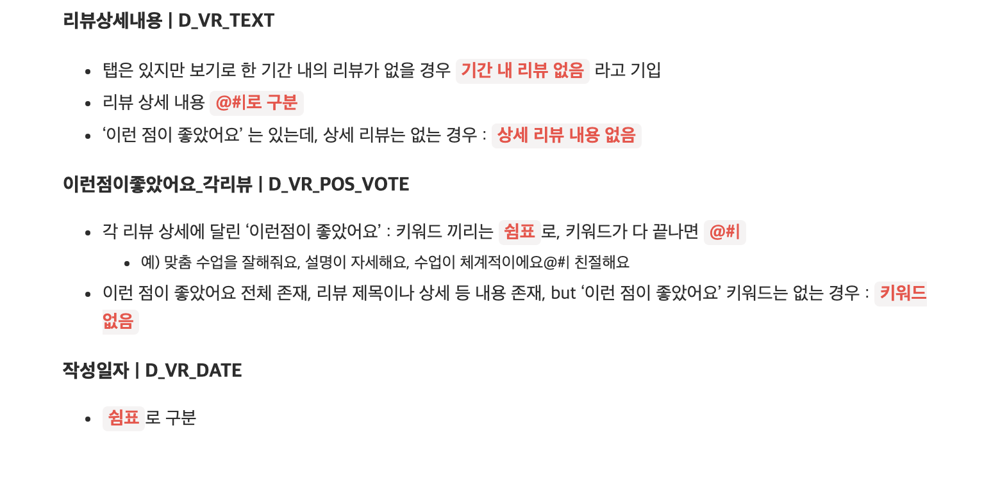
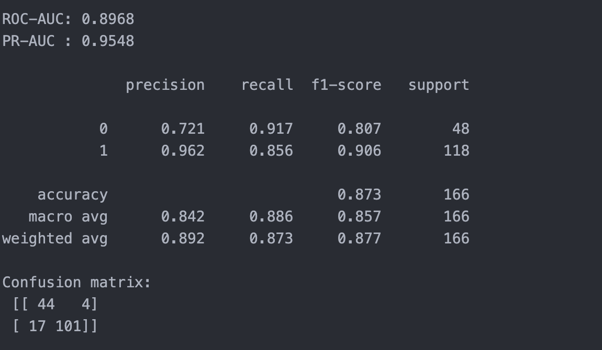

01문제 정의 · 기준 설계
- 데이터로 검증 가능한 범위·판단 기준 정의
- 업무 목적·조건 구조화 및 일관된 기준 설계
Data Project Portfolio
Table of Contents
문제를 정의하고 데이터를 구조화해
활용 가능성을 검증한 과정을 담았습니다.
CORE COMPETENCIES & PROJECT SNAPSHOT
FROM PROBLEM TO DATA FLOW
모호한 문제에도 기준을 세우고,
데이터를 일관되게 처리할 구조를 설계합니다.
Python / SQL / Pandas / Scikit-learn
ChatGPT / Gemini API
BigQuery / GCS / Airflow
축산 전공에서 데이터·AI 기반 문제 해결로 확장해온 경험과 선택
반려동물 사료 R&D 실무 경험
전공의 연구 환경 한계로 진로 재고
타겟 제품군 선정부터 신제품·마케팅 기획
판단 근거가 되는 데이터의 필요성 체감
Python·SQL·통계 기반 분석 학습
데이터 기반 문제 해결 역량 확장
데이터 구조·식별자 제약으로 분석 범위 재정의
분석 가능한 데이터 구조의 중요성 체감
데이터 정의·수집·전처리·구조화 기준 설계
처리 흐름을 처음부터 설계하는 경험
업무의 판단 기준과 예외를 구조화하여
안정적인 수집·처리·검증 흐름을 설계해,
운영 효율화와 서비스 개선으로 연결
자동화를 고려한 데이터 기반 제휴 업체 평가(QC) 재설계
수작업·주관적 평가
점수 근거 추적 어려움
평가 대상·항목 재정의
배점·가중치 구조 설계
네이버 지도 중심 출처 통일
결측·예외 처리 기준 정의
LLM 기반 리뷰 구조화
표준 키워드 매핑
비율 기반 점수화
항목별 점수 통합
최종 평가 점수 산정
실적 미달 여부 예측 모델
Logistic Regression
사람의 판단을 자동화할 수 있도록, 판단 기준을 데이터로 구조화하고 일관된 평가 기준으로 활용할 수 있도록 설계했습니다.
데이터 수집 방식, 평가 기준, 점수 근거를 일관되게 적용할 수 있도록 재설계했습니다.
제휴 확대에 따라 QC 업무 부담이 증가했고, 판매 실적이 미달되는 업체가 늘어나고 있었습니다.
수집과 평가가 수작업 중심인터넷 검색, 자료 정리, 점수 입력까지 전 과정이 수작업
평가 기준·배점의 설계 근거가 불명확항목과 카테고리는 왜 이렇게 구성했고,
왜 이 배점을 주었는지 근거를 추적하기 어려움
정성 평가의 판단 편차와 근거 추적이 어려움내·외부 등 정성 항목을 평가자마다
기준이 달라지고, 점수 이유가 기록되지 않음
평가 대상과 항목 재정의수집·평가 항목이 다른 요식업을 제외하고,
비요식업 데이트 장소 평가에 적용할 항목 재정의
수집 출처를 네이버 지도 중심으로 통일출처를 통일해 동일 기준으로 비교 가능한 정보부터 수집
결측·예외 처리 기준 협의항목 미존재와 단순 공백을 구분해 처리 기준 정의
항목별 배점과 QC Score 구조 설계항목별 중요도를 반영한 배점 기준을 정하고 최종 점수로 통합
평가 기준 개편과 수집 기준 표준화를 통해 자동화 기반을 마련하고,
각 점수의 근거를 추적 가능하게 합니다.
공동 평가 기준 및 전체 평가 체계 재설계
개인 리뷰 데이터 구조화·표준화·점수화 구조 설계
리뷰를 읽기 좋은 요약문이 아니라, 집계 가능한 평가 데이터로 변환했습니다
비정형 자연어
장점·단점·특징 추출
JSON 형태
대상_평가 형태
VOCAB / MAP
리뷰 수 대비 비율
QC Score 반영
무엇에 대한 평가인지 남겨 항목별 집계가
가능하도록 구조화
VOCAB은 집계 기준으로, MAP은 원래 표현
→ 표준 키워드 관계를 남겨 검수·치환에 활용
가게별 리뷰 수 차이로 인한 편향을 줄이기 위해
등장 비율 사용
LLM 출력 표현의 변동성을 줄이기 위해 표준화 기준을 관리하고,
오류 발생 시 필요한 데이터만 재처리할 수 있게 설계했습니다.
new_keywords 후보로 분리누적된 키워드를 재사용해 키워드 표준화 부담을 축소
새로운 의미만 추가 검수하고, 확정한 표준 키워드는 다음 처리에 재사용했습니다.
상태·오류 기록 후 전체 처리 사이클 지속
실패·상태 미기록 건 선별 재처리
재처리 결과 저장 및 처리 상태 업데이트
오류 발생 시에도 전체 처리 사이클 중단 없이 완료
전체 재처리 없이 실패·상태 미기록 건만 선택적으로 재처리했습니다.
키워드 사전·매핑과 상태 기반 선별 재처리 구조를 적용해 초기 테스트 대비 전체 처리시간 약 25% 단축
AI 결과를 저장하는 데서 끝나지 않고, 운영 가능한 데이터 구조로 관리하는 것을 중요시하며 설계했습니다.
제휴 업체 평가 데이터를 활용해 판매 실적 미달 여부를 예측하는 모델을 구현하고, 모델 성능을 통해 활용 가능성을 검증했습니다.
QC 평가 항목
(위치·가격·카테고리·리뷰 등)
Logistic Regression
성능 지표 확인을 통해
활용 가능성 검증
분류 임계값 0.5→0.4 조정 후 Recall 77.1%→85.6%, Precision 약 96% 수준 유지
평가 항목을 개별 변수로 활용한 모델에서 높은 성능을 확인하며,
판매 실적 미달 여부 예측에 활용할 가능성을 확인했습니다.
데이터 구조와 식별자 제약을 확인하고, 해석 가능한 범위로 분석을 재설계했습니다
사용자 행동 로그
약 718만 건user_uuid · path · query북마크 이력
약 41만 건user_uuid · job_uuid · cdate채용공고 정보
약 14만 건job_uuid · cdate · end_date지원 이력
약 34만 건application_id · user_uuid · job_uuid문제: path/query만으로
이벤트 의미 확정 어려움
대응: 의미가 명확한 북마크
행동 중심으로 범위 축소
문제: 2022·2023 직접 비교 시
해석 오류 가능
대응: 최근 시점인 2023년 로그로 최종 범위 확정
문제: 어떤 공고의 지원 시작인지 연결 불가
대응: 유저 1명당 1개 공고
지원으로 가정해 분석 구조 조정
모든 로그를 억지로 해석하지 않고, 데이터가 설명할 수 있는 범위 안에서
분석 단위와 대상을 다시 정의했습니다.
북마크 사용 여부에 따른 지원 행동 차이를 검증하고, 후속 A/B 테스트를 기획했습니다.
북마크 사용자는 지원 완료율이 더 높고, 지원 소요시간은 더 짧을 것이라 예상
초기 가설과 달리, 북마크 사용자는 지원 완료율이 낮고 지원 소요시간도 길었습니다.
이를 북마크가 지원 전환을 저해하는 효과로 단정하기보다, 사용자가 여러 공고를 탐색·비교하며
지원을 고민하는 단계에서 나타나는 행동 신호일 가능성이 있다고 해석했습니다.
지원 결정을 촉진할 요소를 하나씩 검증하기 위해,
첫 개입 변수로 북마크 알림 내 연봉 정보 제공 여부만
변경한 A/B 테스트를 기획했습니다.
관찰된 차이를 인과관계로 단정하지 않고, 개선을 위한 검증 가능한 가설로 발전시킨다.
IMPLEMENTATION EVIDENCE
구현·검증 근거





